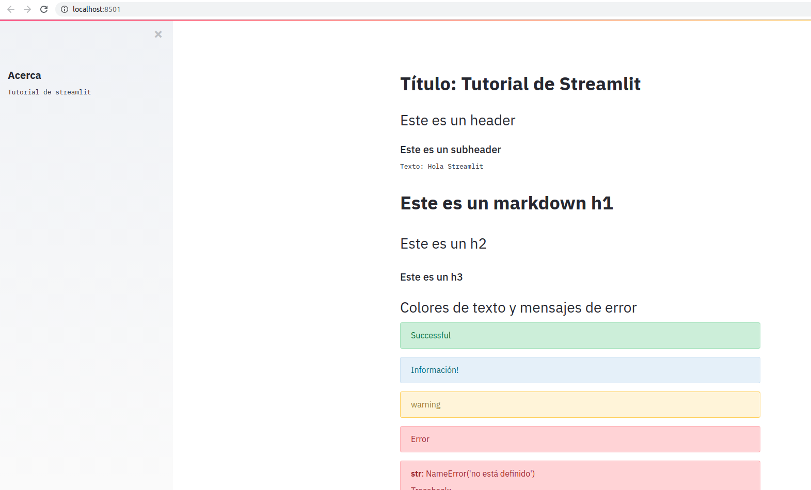

Tutorial introductorio de streamlit.
Posted on Sat 31 October 2020 in Tutorial de Python • 3 min read
En el artículo anterior sobre visualización de campos magnéticos con streamlit se menciona que en el siguiente artículo (este), se dara un tutorial de streamlit básico.
Este artículo se basa en en artículo Streamlit Python Tutorial(Crash Course) de jesse_jcharis.
El código de este artículo lo pueden revisar en el repositorio de github tutorial de streamlit.
Tutorial de Streamlit
A continuación se muestra el código que muestra cada componente de streamlit (se encuentra en el archivo app.py).
import datetime
import time
import pandas as pd
import streamlit as st
from PIL import Image
# Permite definir que la función este en cache.
@st.cache
def run_fxn(n: int) -> list:
return range(n)
def main():
"""Generación de la webapp con streamlit"""
# Definir título
st.title("Título: Tutorial de Streamlit")
# Definir Header/Subheader
st.header("Este es un header")
st.subheader("Este es un subheader")
# Definir un Texto
st.text("Texto: Hola Streamlit")
# Definición de Markdown
st.markdown("# Este es un markdown h1 \n ## Este es un h2 \n ### Este es un h3")
st.header("Colores de texto y mensajes de error")
st.success("Successful")
st.info("Información!")
st.warning("warning")
st.error("Error")
st.exception("NameError('no está definido')")
st.header("Obtener información de ayuda de Python")
st.help(range)
st.header("Widgets:")
st.subheader("Checkbox")
# Checkbox
if st.checkbox("Show/Hide"):
st.text("Mostrar u ocultar Widget")
st.subheader("Radio buttons")
# Radio Buttons
status = st.radio("Cual es su estatus", ("Activo", "Inactivo"))
if status == "Activo":
st.success("Estas activo")
else:
st.warning("Inactivo")
st.subheader("SelectBox")
# SelectBox
occupation = st.selectbox(
"Tu Ocupación", ["Programador", "Cientifico de datos", "Doctor", "Emprendedor"]
)
st.write("Opción seleccionada:", occupation)
st.subheader("MultiSelect")
# MultiSelect
location = st.multiselect(
"Donde trabajas?",
("Londres", "Nueva York", "Accra", "Kiev", "Nepal", "Buenos Aires", "Caracas"),
)
st.write("Seleccionó:", len(location), "locaciones")
st.subheader("Slider")
# Slider
level = st.slider("Cual es tu nivel?", 1, 5)
st.write("Nivel:", level)
st.subheader("Buttons")
# Buttons
if st.button("Acerca"):
st.text("Streamlit es Cool")
else:
st.text("")
st.header("Como recibir una entrada y procesarla con streamlit?")
st.subheader("Recibiendo texto")
# Recibiendo texto
firstname = st.text_input("Escriba su nombre:")
if st.button("Aceptar"):
result = firstname.title()
st.success(result)
st.subheader("Área de texto")
# Text Area
message = st.text_area("Escriba un mensaje")
if st.button("Aceptar "):
result = message.title()
st.success(result)
st.subheader("Entrada de fecha")
# Date Input
today = st.date_input("Hoy es", datetime.datetime.now())
st.text(f"{today}")
st.subheader("Entrada de tiempo")
# Time
the_time = st.time_input("La hora es:", datetime.time())
st.text(f"{the_time}")
st.header("Trabajar con archivos de imágenes, audio o vídeos")
# Images
st.subheader("Archivo de imagen")
img = Image.open("example.jpg")
st.image(img, width=300, caption="Simple Imagen")
st.subheader("Archivo de vídeo")
# Videos
vid_file = open("Streamlit Campo magnético-uRDO3trlSG8.mp4", "rb").read()
# vid_bytes = vid_file.read()
st.video(vid_file)
st.subheader("Archivo de audio")
# Audio
audio_file = open("040-data-science-year-in-review.mp3", "rb").read()
st.audio(audio_file, format="audio/mp3")
st.header("Otras opciones que permite la función write")
# Writing Text/Super Fxn
st.subheader("Texto con write")
st.write("Texto con write")
st.write(range(10))
st.header("Desplegando código puro y json")
st.subheader("Código puro")
st.code("import numpy as np")
with st.echo():
df = pd.DataFrame()
st.subheader("Desplegando json")
st.text("Mostrando JSON")
st.json({"nombre": "Jhon", "apellido": "Doe", "genero": "masculino"})
st.header("Mostrar barra de progreso, spinner y balloons")
st.subheader("Barra de progreso")
my_bar = st.progress(0)
for p in range(10):
my_bar.progress(p + 1)
st.subheader("Spinner")
with st.spinner("Espere .."):
time.sleep(5)
st.success("Finalizó!")
st.subheader("Balloons")
# Balloons
st.balloons()
st.header("Trabajando con data science")
df = pd.read_csv("Venezuela.csv", index_col=0)
st.subheader("Dataframe")
st.dataframe(df)
st.subheader("tabla")
st.table(df.head())
st.subheader("gráfica")
st.line_chart((df))
# mostrar barra lateral
st.sidebar.header("Acerca")
st.sidebar.text("Tutorial de streamlit ")
st.header("Trabajando con funciones")
st.write(list(run_fxn(10)))
if __name__ == "__main__":
main()
Para correrlo se ejecuta:
streamlit run app.py
Esto abre el navegador en el url http://localhost:8501.
Se puede ver una captura de pantalla: 
Se puede ver la demostración de uso desde el vídeo en youtube:
En próximo artículo se mostrará componentes de streamlit más complejos.
¡Haz tu donativo! Si te gustó el artículo puedes realizar un donativo con Bitcoin (BTC) usando la billetera digital de tu preferencia a la siguiente dirección: 17MtNybhdkA9GV3UNS6BTwPcuhjXoPrSzV
O Escaneando el código QR desde la billetera: